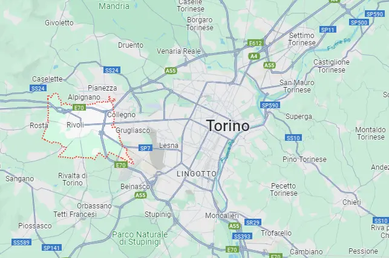
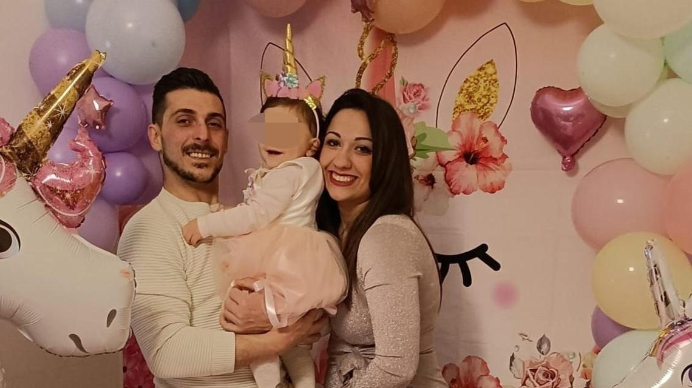

Annalisa D'Auria era una donna di 32 anni che purtroppo è stata vittima di un tragico femminicidio. Viveva a Rivoli, in provincia di Torino, ed era molto amata dalla sua famiglia, dai suoi amici e dai suoi colleghi.
Succede circa il 28 ottobre 2023, davanti agli occhi della loro figlioletta di 3 anni.
Le ha tolto la vita con una coltellata alla gola. Poi si è suicidato gettandosi dal silos dello stabilimento dove lavorava. La coppia, originaria di Salerno, si era trasferita nel torinese, a Rivoli. Lei aveva trovato lavoro nella mensa di un istituto agrario, lui in una fonderia.
Annalisa sarà ricordata come una donna speciale, che ha lasciato un vuoto profondo nel cuore di chi l'ha conosciuta. La sua storia ci ricorda l'importanza di combattere la violenza di genere e promuovere una società in cui ogni individuo sia rispettato e protetto.
La prossima vittima potrebbe essere chiunque.
Anche qualcuno che conosci.
Home